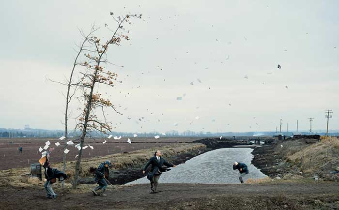
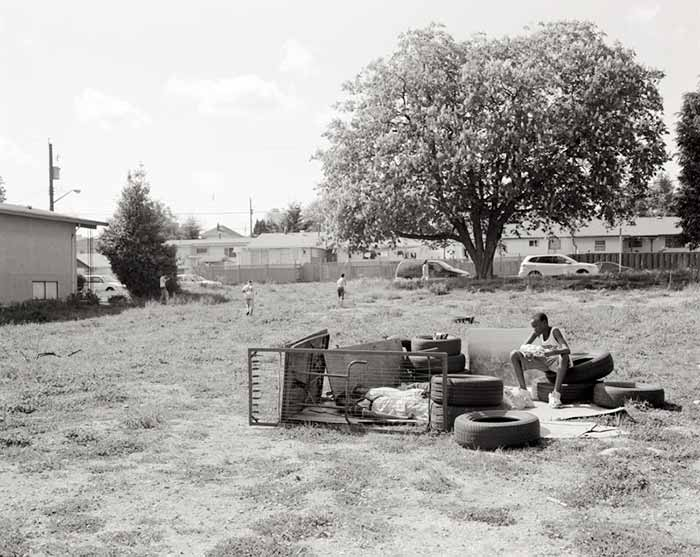

JEFF WALL
Digital Art

Jeff Wall (né le 29 septembre 1946 à Vancouver) est un photographe canadien. Il a soutenu une thèse sur le mouvement Dada et a enseigné l'histoire de l'art au Canada. Ce photographe contemporain est important car il renouvelle le mode de fabrication de la photographie documentaire et amène le spectateur à remettre en cause et à modifier sa perception de la réalité. Issu de l’art conceptuel, Jeff Wall fonde son œuvre dans les années 70, en reprenant le programme de Baudelaire et Manet, peindre la vie moderne. Il remplace le Paris de la fin du xixe siècle par le Vancouver de la fin du xxe siècle et choisit la photographie comme outil de représentation.
Sa première photographie célèbre, La Chambre détruite, s'inspire de La Mort de Sardanapale de Delacroix. Les photographies qu'il propose sont souvent inspirées d'œuvres d'art classique réinterprétées par le prisme photographique comme A Sudden gust of Wind du peintre japonais Hokusai ou Picture for Women, reprise explicite d'une œuvre de Manet : Un bar aux folies bergères, 1882. Ses œuvres sont des photographies de très grand format, comparables à de grandes toiles. Elles sont montées sur des caissons lumineux semblables à ceux utilisés pour les panneaux publicitaires.

Jusque dans les années 70, cette technique n'était pas utilisée par des plasticiens. Jeff Wall inaugure alors cette pratique qui trouvera son prolongement chez de nombreux photographes dans les années 80 et 90. Les photographies de Jeff Wall pourraient être qualifiées de « photographies de cinéma », dans la mesure où elles résultent de mises en scènes minutieusement calculées, pour un résultat final donnant l'illusion d'une photographie documentaire ou un cliché tiré de la « réalité ».
Il considère que l'artiste transmet la représentation de l'évènement tandis que le journaliste figure la réalité. Une ligne de coupure apparaît sur plusieurs de ses œuvres (par ex. Picture for Women) Il fait souvent appel à des acteurs. Il utilise parfois la vidéo, comme outil de préparation de ses photographies. Ses photos sont la représentation du mouvement. La vidéo lui permet de contrôler tous les aspects du mouvement. Parfois, ses personnages sont grotesques et ressemblent à des spectres. Trois personnages de sa fresque sur l'Afghanistan ont cette attitude. Et ce sont des spectres revenant d'outre-tombe.